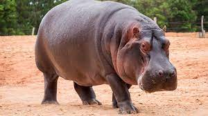

Hipopótamo
amphibius

Los hipopótamos son los terceros mamíferos terrestres más grandes del mundo después de los elefantes
y los rinocerontes blancos. Los machos pueden alcanzar una longitud de entre 3,2 y 5 metros y pesar hasta
4500 kilos, mientras que las hembras pesan hasta 1360 kilos. Los hipopótamos se encuentran en los ríos de la
sabana africana y los principales ríos de África Central. Es un mamífero semiacuático que suele habitar lagos,
ríos y pantanos losuficientemente profunda para poder sumergir todo su cuerpo.
- Su dieta comprende raíces, tubérculos, plantas y hojas, así como frutos caídos de los árboles.
- Los hipopótamos se encuentran en los ríos de la sabana africana y los principales ríos de África Central.
- Pasan hasta 16 horas al día sumergidos en ríos y lagos para mantener la temperatura de sus enormes cuerpos bajo el cálido sol africano.
- El hipopótamo común o del Nilo es un animal extremadamente corpulento, su peso varía de 3000 a 4500 Kg.
- puede correr tan rápido como un humano promedio. Se han cronometrado hipopótamos a 30 km/h en distancias cortas.